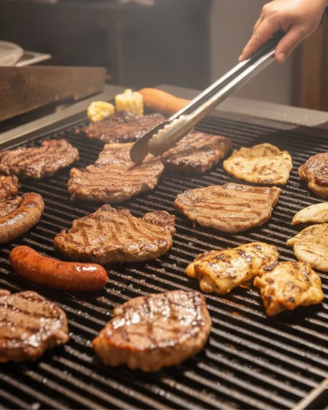
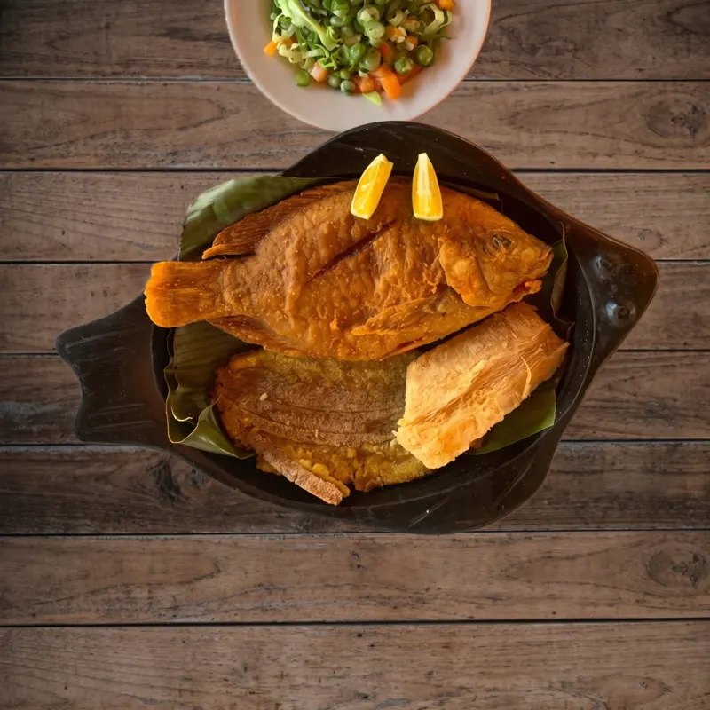
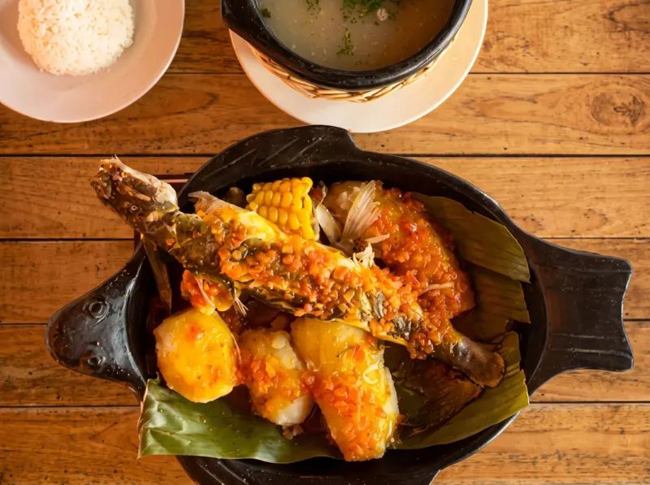
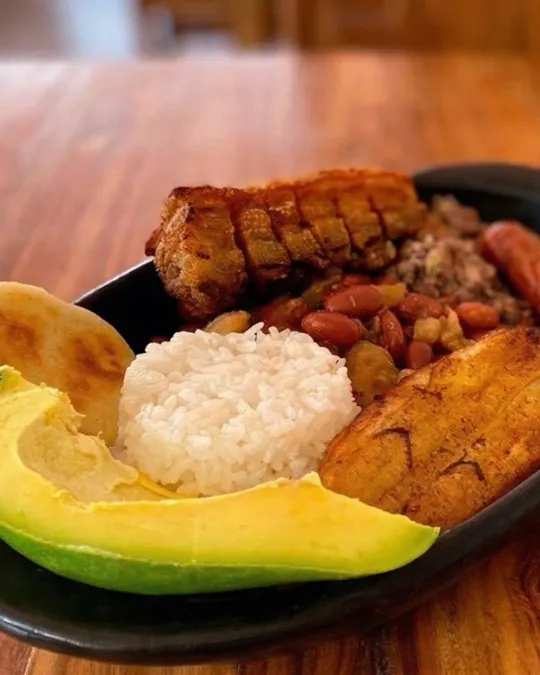

Parrilla
Parrilla
Baby Beef a la parrilla
Corte tierno asado al carbón, servido en plancha caliente con papas y ají de la casa.
Cra. 10 #5-79 · Carmen de Apicalá · Todos los días 12–5 p. m.

El Carmen de Apicalá · Tolima
Parrilla al carbón, pescado de río y cocina colombiana de alma, servidos en loza de barro bajo un gran salón de guadua. Todos los días de 12 a 5 p. m.
01 — Especialidades de la casa
Brasa de carbón, pescado de río y acompañantes de siempre, con ingredientes frescos del Tolima.
Parrilla
Corte tierno asado al carbón, servido en plancha caliente con papas y ají de la casa.

Del ríoEntera, frita al punto exacto, con patacón, yuca, ensalada y limón. Sobre hoja de bijao.

TípicoBagre de río en salsa criolla con mazorca, papa y arroz, servido en cazuela de barro.

ColombianoFríjoles, chicharrón, carne molida, chorizo, arepa, maduro, arroz y aguacate.
02 — Lo que ofrecemos
Cocina colombiana de alma. Selecciona una categoría para explorar nuestros platos.
Precios y disponibilidad del día por WhatsApp. Hacemos domicilios.
Pedir carta con precios

03 — Nuestra esencia
En Santos Sabores creemos que la buena cocina une a la gente. Nuestro salón de guadua, alto y abierto, deja pasar la brisa de Apicalá, y alrededor hay verde para quedarse conversando después de comer.
Somos el punto de encuentro de viajeros, familias y amigos. Servimos en loza negra de barro, tradición artesanal que conserva el calor del plato hasta el último bocado.
4,7★
En Google
+80
Reseñas
7
Días a la semana
04 — Lo que dicen de nosotros
“Definitivamente uno de los mejores platos que he probado. Sazón, porciones, pescado en su punto. Excelente servicio.”
“El mejor restaurante dentro del Carmen. La comida es excelente y la atención es muy buena. Sin duda el mejor lugar.”
“La comida deliciosa, se siente la calidad de sus productos. El ambiente tranquilo, espacioso y fresco.”
“Es el mejor restaurante en Carmen de Apicalá. La sazón es muy buena. Pet friendly, tiene zona de parqueo propio.”
“Excelente comida, generosa, bien presentada. Un lugar muy agradable en el que sin duda repetiremos.”
“Amazing taste of Colombian gastronomy. It was my best experience on my trip and holiday. I loved it!”
Antes de venir
En Santos Sabores, Cra. 10 #5-79, Carmen de Apicalá (Tolima); en Google Maps nos encuentras como “Santos Sabores – Restaurante Parrilla”. Preparamos baby beef, costilla, picada y otros cortes al carbón.
Atendemos todos los días de 12:00 m. a 5:00 p. m. Y sí, hacemos domicilios en El Carmen de Apicalá: pide por WhatsApp o llama al +57 311 523 9953.
Escríbenos por WhatsApp o llámanos al +57 311 523 9953 con fecha, hora y número de personas. Recibimos familias, grupos y celebraciones.
Sí a las dos: somos pet friendly y tenemos parqueadero propio para que llegues tranquilo.
05 — Visítanos
Dirección
Cra. 10 #5-79
Carmen de Apicalá, Tolima, Colombia
Usa el botón “Cómo llegar”: te lleva directo con Google Maps.
Horario
Todos los días · 12:00 m. – 5:00 p. m.
Todos los días de 12 a 5 p. m.
Teléfono, WhatsApp y domicilios
+57 311 523 9953Santos Sabores
Cra. 10 #5-79 · Carmen de Apicalá